When we first came together, we shared our interests in gaming, media, and streaming. As students, we noticed how much time people around us spend on video games. That’s when the idea came: How does too much gaming affect a student’s attention span? We wanted to compare how students can stay focused when gaming versus when they are in class.
Streaming is the continuous transmission of media, whether it’s gaming, music, vlogs, or even mukbangs. We realized people stream to meet different needs: to learn, to be entertained, or to connect with others. Popular streaming platforms include Twitch, Kick, TikTok, YouTube, and Facebook. Each one has strengths and weaknesses, from audience reach to monetization options. We analyzed these platforms to find where our podcast would best fit. As we prepared for our podcast, we studied the key characteristics of a successful stream: Good Audio & Video Quality – so viewers can clearly hear and see. Engaging and Energetic Delivery – to capture attention and build community. Consistency – to keep loyal viewers and grow through the algorithm. These became our guiding principles as we planned how to present our content on gaming.
After comparing all platforms, we decided to stream our podcast on YouTube. Its algorithm can help us reach a wider audience, and it allows us to build a community around our chosen topic. Unlike other platforms that require constant live interaction, YouTube also lets viewers watch later, making our content more accessible to students.
Lastly, we considered the needs of our future viewers. We realized they want: Accessibility – easy to watch and inclusive for everyone. Entertainment – content that is enjoyable, fun, and engaging, making them want to come back for more. Information – content that’s relevant, trustworthy, and useful. Connection – a community where they feel heard and involved. Through our podcast, we aim to provide all four. We don’t just want to share our research, we want to spark conversations about gaming and its impact on students while keeping our audience informed, connected, and entertained.